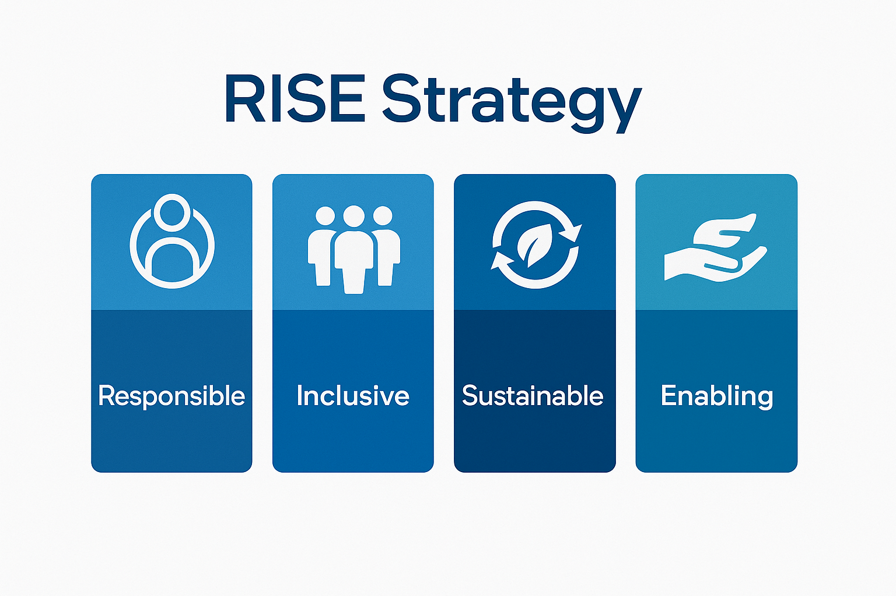

1968
Intel Founded

Robert Noyce and Gordon Moore rename the newly formed company NM Electronics to Intel Corporation, laying the foundation for decades of technological innovation.
1971
First Microprocessor

Intel debuts the 4004, the world's first commercial microprocessor, igniting the microprocessor revolution and propelling the future of computing devices.
1978
8086 Processor

Launch of the 8086 processor, establishing the x86 architecture that drives countless PCs and servers in the modern era.
1985
386 Processor

Intel introduces the 386 processor with 32-bit architecture, ushering in a new era of performance and multitasking for personal computers.
2006
Peak GHG Emissions

This year marks Intel's highest annual greenhouse gas emissions for operations. Over subsequent years, Intel invests heavily in chemical abatement, renewable energy, and energy-efficient manufacturing to reverse this trend.
2020
RISE Strategy
Intel launches its RISE (Responsible, Inclusive, Sustainable, Enabling) strategy and 2030 goals, aiming to drive industry-wide progress on climate action, water stewardship, and waste reduction.
2022
Net-Zero By 2040
Intel announces its commitment to achieve net-zero greenhouse gas emissions (Scope 1 and 2) across its global operations by 2040, building on years of environmental initiatives.
2023
Renewable Electricity
The company achieves 99% renewable electricity usage worldwide, helping to drastically lower carbon emissions and driving progress toward Intel's long-term sustainability goals.
2024
Sustainability Summit
Intel hosts its first Sustainability Summit, uniting suppliers, government officials, and industry leaders to collaborate on next-generation sustainable semiconductor manufacturing.
Scroll to view timeline | Hover over cards to learn more!
Our Impact Today
A snapshot of our progress towards our 2030 and 2040 sustainability goals. All data is based on Intel's public reports.
Carbon & Energy
99%
Renewable Energy Usage
Source: Intel CR Report 2024Water Stewardship
100B+
Gallons of Water Conserved
Source: Intel ESG ReportWaste & Circular Economy
95%
Waste Diverted from Landfills
Source: Intel Environmental Progress ReportsSupply Chain
98.5%
Conflict-Free Minerals
Source: Intel Supplier Responsibility ReportsOur Path Forward
Our ambitious goals driving sustainable innovation through 2040.
Key Goals
- Achieve 100% renewable energy use in global manufacturing.
- Implement water conservation projects projected to restore over 100% of our freshwater use.
- Create a "net positive" waste-to-landfill strategy.
Net-Zero Vision
- Achieve net-zero greenhouse gas emissions across all global operations.
- Develop and deploy carbon-capture technologies at scale.
- Establish a fully circular supply chain with zero waste.